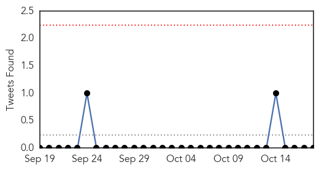
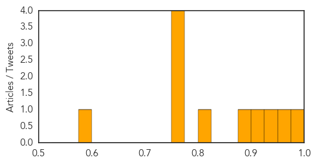

Dengue Fever
30-Day Web Trend
0 alerts, 1 warnings

30-Day Twitter Trend
0 alerts, 0 warnings

Article Locations

Article Confidences

Top Articles:
Top Tweets:
-
No tweets found for Oct 18, 2015
Influenza
30-Day Web Trend
7 alerts, 5 warnings

30-Day Twitter Trend
0 alerts, 0 warnings

Article Locations

Article Confidences
Top Articles:
- 0.991
- Governor Dennis Daugaard’s Weekly Column: Fighting The Flu Bug
- 0.965
- Free flu shots on hand for low-income residents
- 0.945
- Glimpse of the Past: Spanish influenza
- 0.904
- Wash your hands to ward off zombies
- 0.895
- Today's stories from newspapers in Flamborough
- 0.803
- Litzman urges citizens to receive flu vaccines
- 0.751
- October 18, 2015 Archives
- 0.751
- October 18, 2015 Archives
- 0.751
- October 18, 2015 Archives
- 0.751
- October 18, 2015 Archives
- 0.584
- Today's stories from newspapers in Halton Hills
Top Tweets:
-
No tweets found for Oct 18, 2015